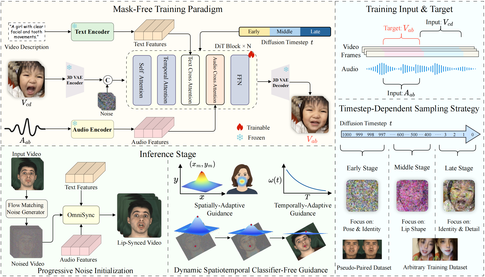

Main Demo
Comprehensive demonstration of OmniSync's universal lip synchronization capabilities across diverse visual scenarios.
Demo Gallery
Explore various scenarios showcasing OmniSync's versatility and performance
High Identity Consistency
Demonstrating superior identity preservation across different poses and expressions
Occlusion Robustness
Maintaining accurate lip sync even with partial facial occlusions
Stylistic Diversity
Working seamlessly with stylized characters and artistic representations
Key Features
Mask-Free Training
Eliminates reliance on reference frames and explicit masks through direct video editing paradigm, enabling robust performance across diverse visual representations.
Identity Preservation
Flow-matching-based progressive noise initialization ensures consistent head pose and identity preservation while allowing precise mouth region modifications.
Enhanced Audio Conditioning
Dynamic Spatiotemporal Classifier-Free Guidance provides fine-grained control over audio influence, addressing weak signal problems in audio-driven generation.
Universal Compatibility
Works seamlessly with stylized characters, non-human entities, and AI-generated content, breaking limitations of traditional face detection methods.
Unlimited Duration
Supports unlimited-duration inference while maintaining natural facial dynamics and temporal consistency throughout long sequences.
Occlusion Robust
Demonstrates strong robustness to facial occlusions and challenging visual conditions while maintaining high-quality lip synchronization.
Abstract
Lip synchronization is the task of aligning a speaker's lip movements in video with corresponding speech audio, and it is essential for creating realistic, expressive video content. However, existing methods often rely on reference frames and masked-frame inpainting, which limit their robustness to identity consistency, pose variations, facial occlusions, and stylized content. In addition, since audio signals provide weaker conditioning than visual cues, lip shape leakage from the original video will affect lip sync quality.
In this paper, we present OmniSync, a universal lip synchronization framework for diverse visual scenarios. Our approach introduces a mask-free training paradigm using Diffusion Transformer models for direct frame editing without explicit masks, enabling unlimited-duration inference while maintaining natural facial dynamics and preserving character identity. During inference, we propose a flow-matching-based progressive noise initialization to ensure pose and identity consistency, while allowing precise mouth-region editing. To address the weak conditioning signal of audio, we develop a Dynamic Spatiotemporal Classifier-Free Guidance (DS-CFG) mechanism that adaptively adjusts guidance strength over time and space. We also establish the AIGC-LipSync Benchmark, the first evaluation suite for lip synchronization in diverse AI-generated videos. Extensive experiments demonstrate that OmniSync significantly outperforms prior methods in both visual quality and lip sync accuracy, achieving superior results in both real-world and AI-generated videos.
Method Overview
Overview of OmniSync framework showing mask-free training paradigm, progressive noise initialization, and dynamic spatiotemporal CFG.
🎯 Core Innovations
- Mask-Free Training Paradigm: Direct cross-frame editing using Diffusion Transformers without explicit masks or reference frames
- Progressive Noise Initialization: Flow-matching-based strategy that maintains spatial consistency while enabling precise mouth modifications
- Dynamic Spatiotemporal CFG: Adaptive guidance that balances audio conditioning strength across time and space dimensions
- Timestep-Dependent Sampling: Strategic data sampling that aligns with different phases of the diffusion process
AIGC-LipSync Benchmark
The first comprehensive evaluation framework for lip synchronization in AI-generated content
615 Diverse Videos
Comprehensive collection from state-of-the-art T2V models including Kling, Dreamina, Wan, and Hunyuan
Stylized Characters
Includes challenging scenarios with artistic styles, non-human entities, and creative representations
Challenging Conditions
Variable lighting, occlusions, and extreme poses that traditional benchmarks miss
Comprehensive Metrics
Multi-dimensional evaluation including visual quality, identity preservation, and generation success rates
Citation
@article{peng2025omnisync,
title={OmniSync: Towards Universal Lip Synchronization via Diffusion Transformers},
author={Peng, Ziqiao and Liu, Jiwen and Zhang, Haoxian and Liu, Xiaoqiang and
Tang, Songlin and Wan, Pengfei and Zhang, Di and Liu, Hongyan and He, Jun},
journal={arXiv preprint arXiv:2025.xxxxx},
year={2025}
}
Acknowledgments
We would like to express our sincere gratitude to the vibrant community at Civitai for their generous sharing of creative content. Most of our demonstration videos were collected from this platform, showcasing the diverse and artistic AI-generated content that our community creates and shares.